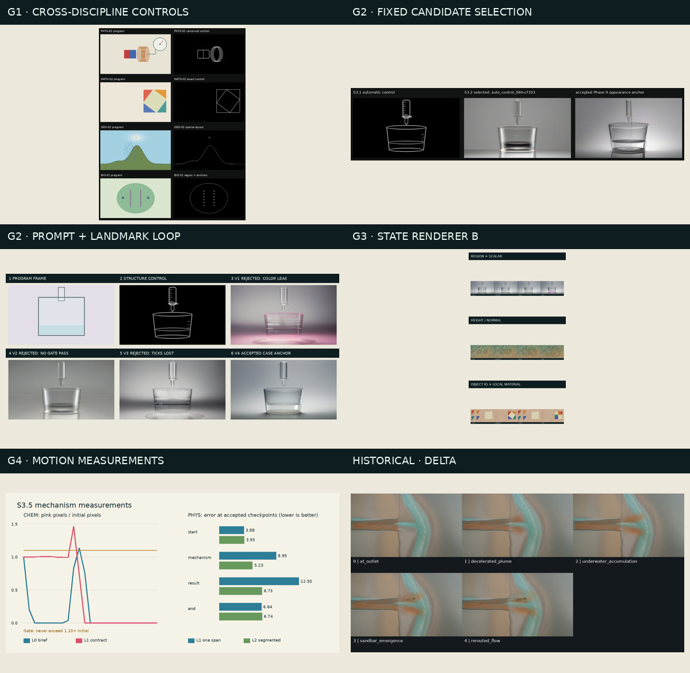

Live-Document · stage3-core-0.1.0-alpha.1 · 2026-07-31
Stage 3 发布的是什么，又没有发布什么
这是一个可复现核心 Alpha：相同合同、代码、模型配置和固定候选会得到同一控制、 同一选择和同一失败/通过结论。它已经跨五学科验证输入与控制前半链路，并在数学、物理、 化学验证后半链路。它不是“十一个案例都能一键生成最终写实视频”的 1.0 版本。
1. 新人先看这条主线
程序状态、语义层、目标和硬规则
几何在哪里、数量和拓扑
固定模型/seed 网格与选择器
冻结 Anchor + 确定性状态渲染
方向、身份、趋势、静止项
| 模块 | 输入从哪来 | 实际输出 | 失败怎么办 |
|---|---|---|---|
| Input Contract Builder | 程序关键帧、states.jsonl、语义层、Visual Target | 版本化 Case JSON 与哈希 | 缺文件/语义就停在 G0 |
| Semantic Normalizer | Case 自己命名的 boundary/region/field/object | 通用类型且保留来源 | 不从截图猜回事实 |
| Geometry + Control | 标准语义 + preserve/canonicalize/layout 策略 | structure_control、region、anchor、derivation | G1 不过不运行图片模型 |
| SDXL + ControlNet | 控制图 + Prompt Compiler 文本 | 固定 9 候选集合 | 全部失败就报告失败，不无限抽 seed |
| State Renderer B | 一张冻结外观 Anchor + 每帧程序状态 | 机制正确、背景稳定的关键帧 | 算子无法表达则 unsupported |
| LTX + Motion Contract | 首尾关键帧 + 合同编译文本 | 视频候选 + 逐帧 G4 | 按运动类型回退程序运动 |
2. 当前真实覆盖，不用一句“通用”糊过去
| Case | G0 | G1 | G2/G3 | G4 | 成熟度 |
|---|---|---|---|---|---|
| MATH-02 数学 | passed | passed | passed | deterministic_fallback | 验证通过（视频回退） |
| PHYS-01 物理 | passed | passed | passed | L1_passed | 完整验证 |
| CHEM-01 化学 | passed | passed | passed | deterministic_fallback | 验证通过（视频回退） |
| BIO-01 生物 | passed | passed | not_stage3_validated | not_stage3_validated | 仅前半链路 |
| GEO-02 地理 | passed | passed | blocked_by_provisional_visual_target | not_stage3_validated | 仅前半链路 |
数学、物理、化学形成了后半链路证据：MATH 的精确刚体视频模型失败但程序回退确定； PHYS 的 L1 视频通过；CHEM 的关键帧通过而液体视频回退。BIO/GEO 不因 Stage 2 有图片 就被冒充成 Stage 3 完成。
3. 六个阶段到底产出了什么

4. 两条历史基线为什么继续保留


5. 复现性边界
完全确定性
合同校验、语义映射、几何、控制图、State Renderer B、 所有 G0/G1/G3/G4 量表、固定候选集合的排序与选择。
模型内部有随机性但搜索空间被冻结
SDXL/ControlNet 与 LTX 使用固定模型文件、 seed、采样参数和有限候选预算；生产重跑选择已有冻结候选，不重新凭感觉抽图。
当前不能承诺
- BIO-01 has accepted inputs and G1 control but no Stage 3 State Renderer B or G4 result.
- GEO-02 has accepted G0/G1 control but its Visual Target Package is provisional and it has no Stage 3 State Renderer B or G4 result.
- Five non-sentinel scale cases still have missing Visual Target Packages.
- The deployed video runtime does not consume program video, object tracks, masks or motion fields.
- Deterministic video fallbacks preserve mechanism but do not yet inherit every S3.4 realistic material.
6. 从零验证这个发布
cd /workspace/Live-Document # 只读/零模型发布审计 /opt/venv/bin/python -m modules.video_model.stage3.phase6 --audit # 测试固定 prompt、selector、State Renderer、motion policy 和基线哈希 /opt/venv/bin/python -m pytest -q modules/video_model/stage3/tests # 重新生成本报告与 release manifest（不调用模型） /opt/venv/bin/python -m modules.video_model.stage3.phase6 --publish
机器可读证据： release-audit.json · release-manifest.json · release_policy.json · CHANGELOG.md。
7. 最终判断
Stage 3 已经把“Agent 临场试图”变成了有合同、有版本、有失败证据、有回退的核心流程。 最重要的成果不是某张烧杯图，而是系统能明确回答：输入缺了什么、模型实际拿到了什么、 为何选这张、哪条机制失败、何时必须回退。
下一轮不应继续优化烧杯 prompt；应该补齐 BIO‑01 的 State Renderer/G4， 并把 GEO‑02 的 provisional Visual Target 变成用户认可或项目接受的目标后再走后半链路。